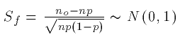
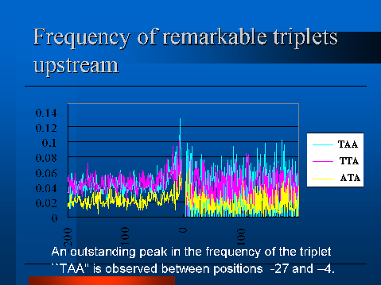

Analysis of translation initiation sites
in the complete genome of Mycoplasma genitalium suggests that
this bacterium uses alternative signal for translation initiation
Rintaro Saito and Masaru Tomita
Introduction
Although the Shine-Dalgarno(SD) sequence is widely
accepted as the
signal sequence for ribosome-mRNA binding in procaryotic translation
initiation, this sequence is not well conserved among genes within or
among species. This is especially striking in Mycoplasma
genitalium,where no obvious conserved sequence
can be observed
upstream of start codons.
To investigate the possibility of an alternative
sequence pattern to account for the lack of SD sequences,
we have conducted computer analyses of translation initiation
sites(ORF start sites) in the complete genome sequence of
M.genitalium.
Materials and Methods
Frequencies of all 64 triplet in within 500 bases upstream from start
codons are computed. Then standardized frequencies(Sf) of each
triplet at
each position with respect to start codons were calculated according
to the following formula,

where n is the number of sequences to analyze, p is frequency
of specific triplets that appear in the
sequences, and no is the number of the specific triplets that were
observed at specific position.
Results and Discussion
Triplets with significant frequencies are listed in
fig.a.
| Position | Sf | Triplet | Position | Sf | Triplet |
| -6 | 9.89 | taa | -19 | 5.47 | tta |
| -7 | 6.38 | tta | -11 | 5.29 | aaa |
| -12 | 5.90 | taa | -15 | 5.19 | taa |
| -6 | 5.87 | ata | -4 | 5.17 | agt |
| -3 | 5.59 | gta | | | |
(a)Significant triplets that appears upstream of start
codon and their positions and standardized
frequencies.
Frequency of triplet ``TAA'' was the most
significant one.
We have plotted frequency of ``TAA'' around start codons.
An outstanding peak in the frequency of the triplet ``TAA'' was
observed between positions -27 to -4(Fig.b).

(b)Frequency of
TAA triplets around start codons in
M.genitalium
The similar peak was still observed
even when stop codons(TAA) of the preceding genes were eliminated from
our analysis by only counting translation initiation sites with their
preceding genes oppositely oriented.
The fact that the complementary triplet
``TTA'' does not
exist in the 3'-terminus of 16S rRNA of
M.genitalium(The 3'-terminal sequence of M.genitalium
16S rRNA is ``gggggtggatcacctc''. Thus the predicted ribosome
binding sequence would be ``gaggtgatccaccccc''.) leads us to
suspect the existence of an alternative mechanism for translation
initiation in M.genitalium.
Acknowledgements
This work is supported in part by a Grant-in-Aid for
Scientific Research on Priority Areas, ''Genome Informatics'', from The
Ministry of Education, Science, Sports and Culture in Japan.
References
-
Dalphin M.E. et al., The translational signal databese, TransTerm, is
now a relational database,
Nuc.Acid.Res., 26:335-337, 1998.
-
Dybvig K. and Voelker, L., Molecular Biology of Mycoplasmas,
Annu.Rev.Microbiol., 50:25-57,1996.
-
Fraser,C.M. et al., The minimal gene complement
of Mycoplasma genitalium, Science 270:397-403, 1995
-
Loechel S., Inamine J.M., and Hu P-C., A novel translation initiation
region from Mycoplasma genitalium that functions in
Escherichia coli, Nuc.Acid.Res., 19:6905-6911, 1991.
-
Shine J. and Dalgarno, L., The 3'-terminal sequence
of Escherichia coli 16S ribosomal RNA:Complementarity to
nonsense triplets and ribosome binding sites,
Proc.Natl.Acad.Sci.USA, 71:1342-1346,1974.
Go back to my research page